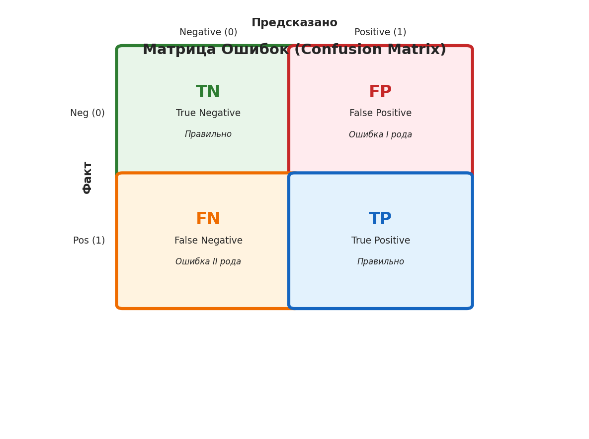

📊 Сравнение вариантов иллюстраций ROC и AUC
📌 Цель: Сравнить три подхода к созданию иллюстраций для cheatsheet:
статичные SVG, программно-генерируемые (matplotlib), и анимированные (Manim).
Вариант 1: Встроенные SVG иллюстрации ✅ Готово
Описание: Иллюстрации созданы вручную как inline SVG и встроены непосредственно в HTML файл cheatsheet.
Плюсы
- Работает сразу, без зависимостей
- Идеально для печати
- Малый размер файла
- Полный контроль над дизайном
- Можно оптимизировать под печать
Минусы
- Ручное создание кривых
- Трудно изменять
- Нет анимации
- Нужно знать SVG

Текущий статичный cheatsheet с SVG иллюстрациями
Файл: cheatsheets/roc_auc_cheatsheet.html
Вариант 2: Программно-генерируемые иллюстрации (Matplotlib) ✅ Демо готово
Описание: Python скрипт генерирует статичные иллюстрации с помощью matplotlib. Результат экспортируется в PNG и SVG.
Плюсы
- Программно генерируемые
- Легко создавать варианты
- Математически точные кривые
- Экспорт в SVG и PNG
- Простая установка (pip install)
Минусы
- Нет анимации
- Требует Python окружение
- Менее кастомизируемый дизайн
- Отдельный build процесс
ROC Curves Comparison

Confusion Matrix

Использование:
cd animations
pip install -r requirements.txt
python demo/roc_curve_demo.py
Выходные файлы:
output/roc_curve_comparison.png (168 KB)output/roc_curve_comparison.svg (75 KB)output/confusion_matrix.png (57 KB)output/confusion_matrix.svg (46 KB)
Вариант 3: Анимированные иллюстрации (Manim) ⚠️ Скрипты готовы
Описание: Использование Manim (Mathematical Animation Engine) для создания профессиональных анимаций. Экспорт в MP4 видео или статичные кадры.
Плюсы
- Красивые плавные анимации
- Профессиональное качество
- Математически точные
- Популярен в YouTube edu
- Можно экспортировать кадры в SVG
Минусы
- Сложная установка (LaTeX, Cairo, FFmpeg)
- Долгий рендеринг (минуты)
- Большие файлы (видео MB)
- Нельзя печатать анимации
- Крутая кривая обучения
⚠️ Примечание: Manim требует установки системных зависимостей (Cairo, Pango, FFmpeg, LaTeX).
Скрипты готовы, но для рендеринга нужно установить Manim локально.
Установка (Ubuntu/Debian):
sudo apt update
sudo apt install libcairo2-dev libpango1.0-dev ffmpeg
pip install manim
Использование:
cd animations
# Низкое качество (быстро, для проверки)
manim -pql demo/roc_curve_manim.py ROCCurveScene
# Высокое качество (финальная версия)
manim -pqh demo/roc_curve_manim.py ROCCurveScene
# Все сцены
manim -pql demo/roc_curve_manim.py ROCCurveScene
manim -pql demo/roc_curve_manim.py ThresholdSelectionScene
manim -pql demo/roc_curve_manim.py ConfusionMatrixScene
Доступные сцены:
ROCCurveScene - Построение ROC кривой с анимациейThresholdSelectionScene - Выбор оптимального порогаConfusionMatrixScene - Анимация матрицы ошибок
Файл: demo/roc_curve_manim.py
📋 Сводная таблица сравнения
| Критерий |
Вариант 1: SVG |
Вариант 2: Matplotlib |
Вариант 3: Manim |
| Статус |
✅ Готово |
✅ Демо готово |
⚠️ Требует установки |
| Установка |
Не требуется |
pip install |
Системные пакеты + pip |
| Время создания |
30-60 мин (ручная) |
1 сек |
30-120 сек (рендеринг) |
| Размер файла |
~438 KB (HTML) |
~350 KB (PNG+SVG) |
~5-50 MB (MP4) |
| Анимация |
❌ Нет |
❌ Нет |
✅ Да |
| Печать |
✅ Отлично |
✅ Отлично |
⚠️ Только кадры |
| Кастомизация |
✅ Полная |
⚠️ Ограниченная |
✅ Высокая |
| Сложность |
Средняя (SVG) |
Низкая (Python) |
Высокая (Manim API) |
💡 Рекомендации
Для статичного cheatsheet (печать)
✅ Использовать Вариант 1 (текущий) - встроенные SVG
Причина: Оптимально для печати, малый размер, не требует зависимостей.
Для генерации множества вариантов
✅ Использовать Вариант 2 - matplotlib скрипты
Причина: Легко менять параметры и генерировать новые версии программно.
Для обучающих видео / онлайн курсов
✅ Использовать Вариант 3 - Manim анимации
Причина: Профессиональные анимации, идеальны для видео контента.
Комбинированный подход
✅ Использовать все три варианта:
- Вариант 1 для основного статичного cheatsheet
- Вариант 2 для быстрого создания дополнительных иллюстраций
- Вариант 3 для создания демо-видео и интерактивных примеров
📚 Дополнительные материалы:
animations/README.md - Подробная документацияanimations/demo/roc_curve_demo.py - Matplotlib скриптanimations/demo/roc_curve_manim.py - Manim скриптыanimations/requirements.txt - Python зависимости
Создано для проекта MLCheatSheets • 2026